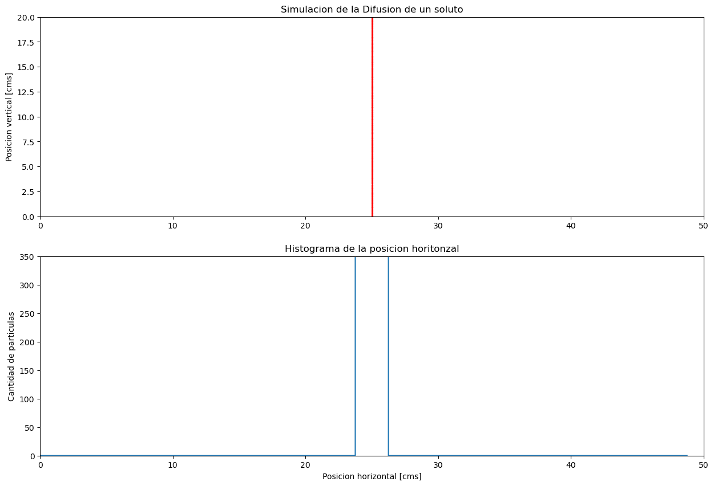

Difusion de solutos con y sin carga
Contents
Difusion de solutos con y sin carga#
Simulacion Difusion en 1-Dimension#
Simulacion muy simple y aproximada. No considera colision entre particulas realmente.
Inspirado en: https://scipython.com/blog/a-very-simple-2-d-diffusion-model/
import numpy as np
import matplotlib.pyplot as plt
from matplotlib.animation import FuncAnimation
# (Square) grid side length.
x_max = 50
y_max = 20
# Maximum absolute displacement in the x direction
max_x_mov = 1
# Maximum numbter of iterations.
nitmax = 750
# Number of particles in the simulation.
nparticles = 1000
# Output a frame (plot image) every nevery iterations.
nevery = 15
# Initialize the location of all the particles to the centre of the grid.
x_locs = np.ones((nparticles,nitmax), dtype=float)*x_max/2 #posicion inicial en x
y_locs = np.random.uniform(low=0, high=y_max, size=(nparticles,)) #posicion inicial en y
#Computo de histograma de las posiciones en x para cada iteracion
bins = 40
hist_x_locs = np.zeros((bins,nitmax), dtype=float) #histograma de las posiciones en x
hist_x_locs[:,0], edges = np.histogram(x_locs, bins = bins, range = (0, x_max))
# Se genera para todas las posibles iteraciones, la actualizacion de la posicion en x.
# A la posicion previa se le suma un movimiento aleatorio.
for iteration in range(nitmax):
if iteration == 0:
continue
else:
x_locs[:,iteration] = x_locs[:,iteration-1] + np.random.uniform(low=(-1)*max_x_mov, high=max_x_mov, size=(nparticles,))
hist_x_locs[:,iteration], edges = np.histogram(x_locs[:,iteration], bins = bins, range = (0, x_max))
# Create the 2D figure object.
fig = plt.figure()
fig.set_size_inches(15, 10)
ax = fig.add_subplot(111)
ax.set_xlim(0, x_max)
ax.set_ylim(0, y_max)
ax.set_xlabel("Posicion horizontal [cms]")
ax.set_ylabel("Posicion vertical [cms]")
ax.set_title("Simulacion de la Difusion de un soluto")
puntos = ax.scatter(x_locs[:,0].T, y_locs.T, s=1.5, c="red")
plt.show()
#data = np.vstack((x_locs[:,100], y_locs))
#puntos.set_offsets(data.T)
#plt.show()
def animation_frame(i, x_locs, y_locs, puntos):
# update x_locs data
data = np.vstack((x_locs[:,i], y_locs))
# update data for the plot
puntos.set_offsets(data.T)
return puntos
ani = FuncAnimation(fig, animation_frame, frames = nitmax, fargs=(x_locs, y_locs, puntos), interval=10, repeat = False)
Se vuelve a correr la simulacion incluyendo un histograma de la posicion de las particular para estudiar su distribucion
# Create the 2D figure object.
fig, ax = plt.subplots(2,1)
fig.set_size_inches(15, 10)
ax[0].set_xlim(0, x_max)
ax[0].set_ylim(0, y_max)
ax[1].set_xlim(0, x_max)
ax[1].set_ylim(0, 350)
ax[0].set_ylabel("Posicion vertical [cms]")
ax[0].set_title("Simulacion de la Difusion de un soluto")
ax[1].set_xlabel("Posicion horizontal [cms]")
ax[1].set_ylabel("Cantidad de particulas")
ax[1].set_title("Histograma de la posicion horitonzal")
puntos = ax[0].scatter(x_locs[:,0].T, y_locs.T, s=1.5, c="red")
histograma, = ax[1].plot(edges[:-1], hist_x_locs[:,0])
plt.show()
def animation_frame(i, x_locs, y_locs, puntos, hist_x_locs, histograma):
# update x_locs data
data = np.vstack((x_locs[:,i], y_locs))
# update data for the plot
puntos.set_offsets(data.T)
histograma.set_ydata(hist_x_locs[:,i])
return puntos, histograma
ani = FuncAnimation(fig, animation_frame, frames = nitmax, fargs=(x_locs, y_locs, puntos, hist_x_locs, histograma), interval=10, repeat = False)

/opt/homebrew/Caskroom/miniconda/base/envs/jupyter-book-env/lib/python3.10/site-packages/matplotlib/animation.py:884: UserWarning: Animation was deleted without rendering anything. This is most likely not intended. To prevent deletion, assign the Animation to a variable, e.g. `anim`, that exists until you output the Animation using `plt.show()` or `anim.save()`.
warnings.warn(
EJEMPLO: Modelo en 2D con vision 3D de la concentracion: https://scipython.com/blog/a-very-simple-2-d-diffusion-model/
Corrientes de iones a traves de la membrana#
Potasio K
# Constantes
R = 8.314 # Constante de los gases
F = 9.649E4 # Faraday
T = 310 # temperatura absoluta del cuerpo humano, 37 grados centigrados
z = +1 #Carga
Ci_K = 155 # concentracion interna de Potasio
Co_K = 4 # concentracion externa de Potasio
E_K = -97E-3 # Potencial de equilibrio del Potasio
Em = np.arange(-400E-3, 200E-3, 1E-3) # Potencial de membrana en mV
# Utizando la Ecuacion de corriente de Goldman-Hodgkin-Katz
I_K = ((z**2)*(F**2)/(R*T))*Em*(Ci_K - Co_K*np.exp((-z*F/(R*T))*Em))/(1 - np.exp((-z*F/(R*T))*Em)) # Corriente de Potasio
# create a figure and axis
fig, ax = plt.subplots()
# line plot
ax.plot(Em, I_K,c='b')
ax.vlines((0,0), ymin=np.min(I_K), ymax=np.max(I_K))
ax.vlines(E_K, ymin=np.min(I_K), ymax=np.max(I_K), linestyles="dashed", colors="k")
#Titulo
ax.set_title('Corriente de Potasio en funcion de Em')
#Etiqueta del exe X
ax.set_xlabel('Em [V]')
#Etiqueta del exe Y
ax.set_ylabel('Corriente [# iones]')
ax.set_ylim([np.min(I_K), np.max(I_K)])
ax.grid()
ax.set_axisbelow(True)
plt.show()